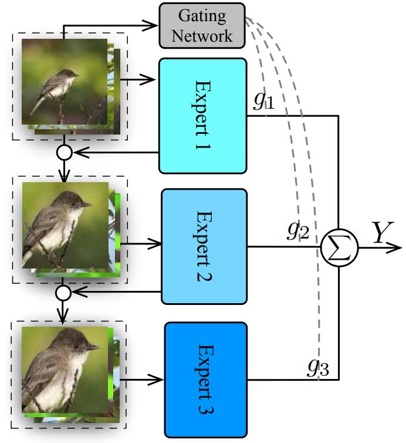
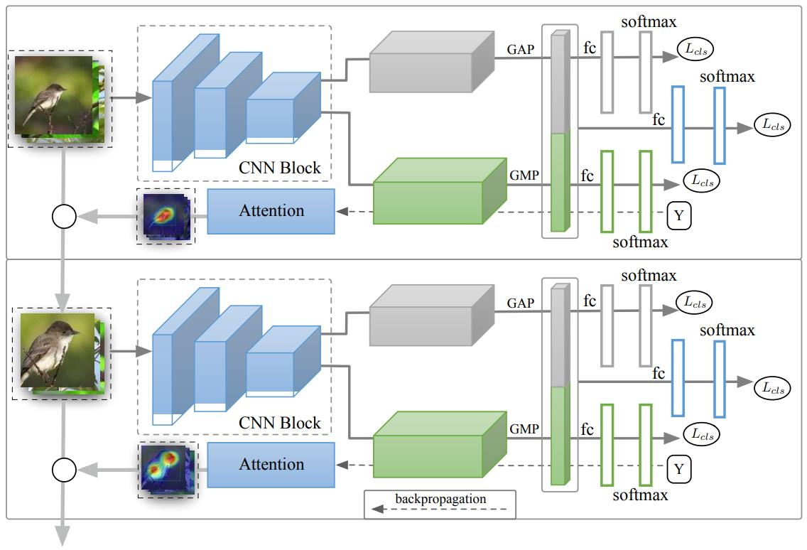
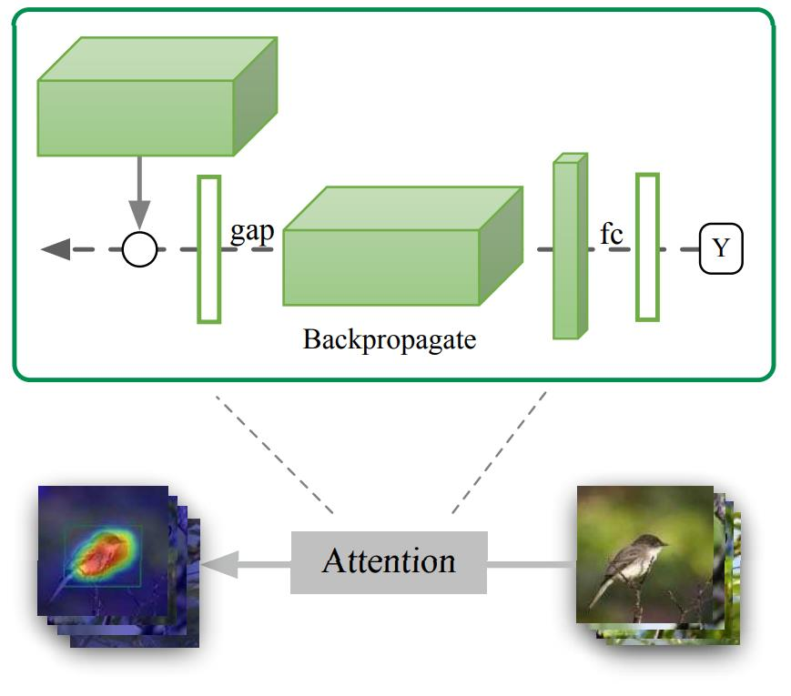
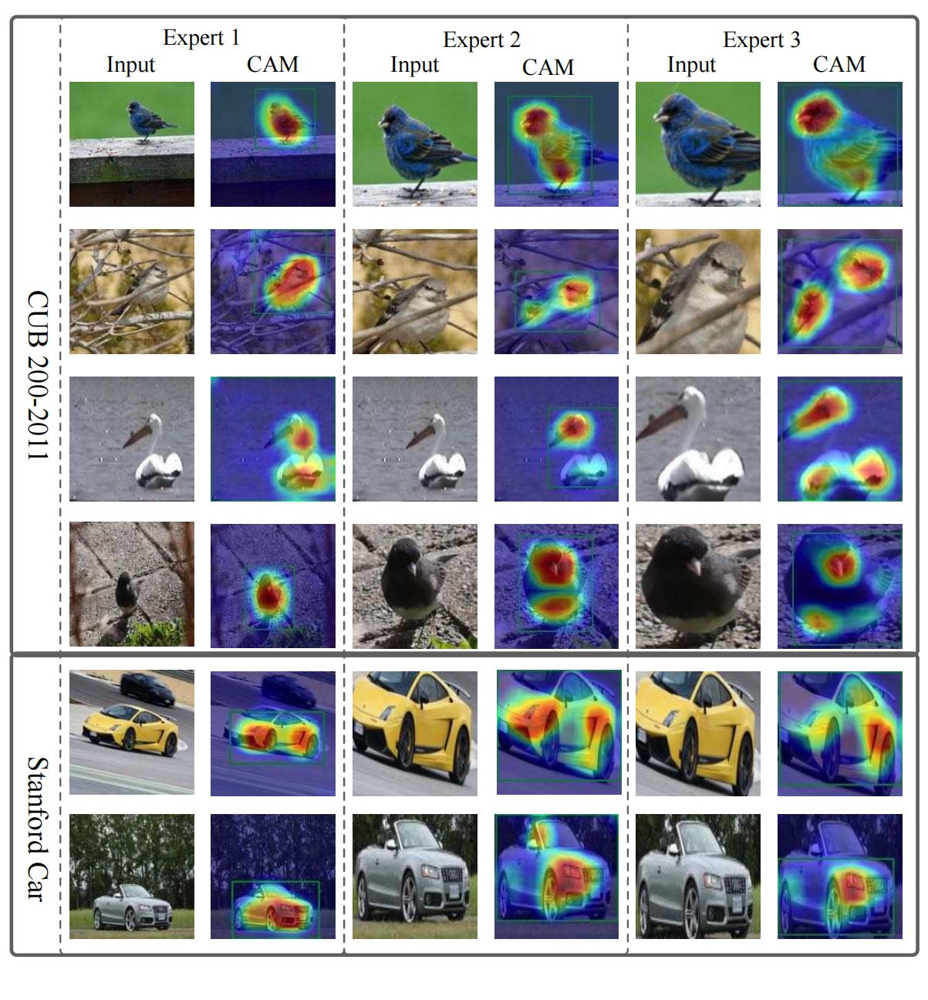
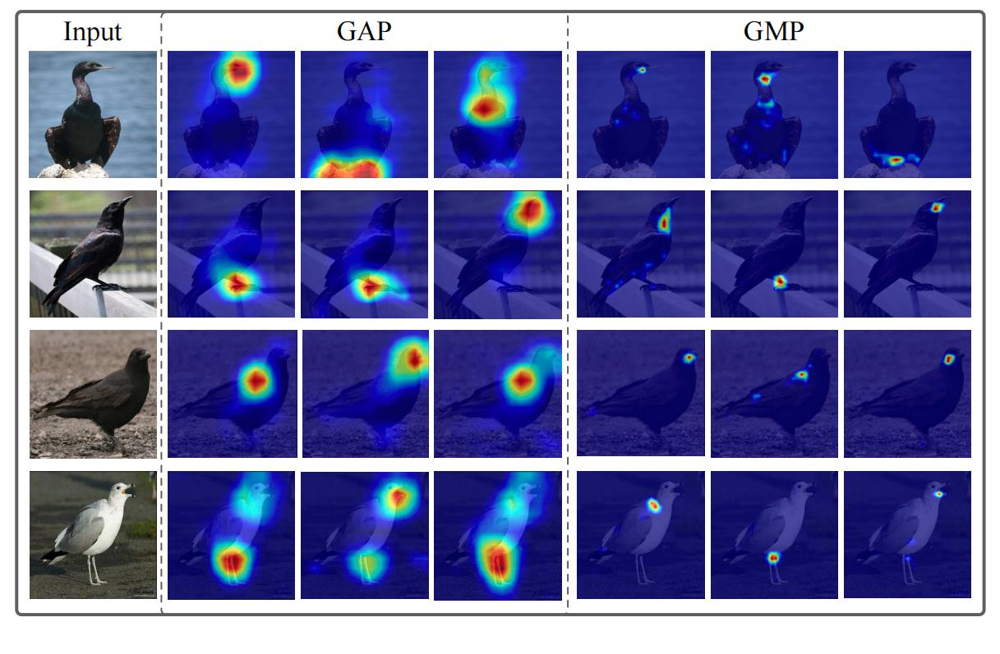
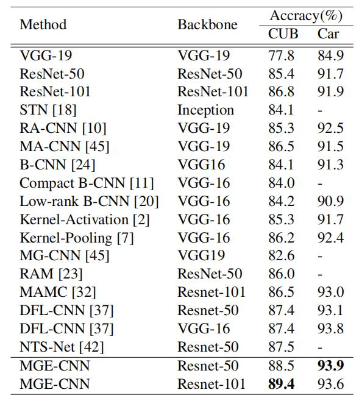

细粒度：MGE-CNN¶
综述¶
会议时间：IEEE International Conference on Computer Vision 2019 (ICCV 2019)
针对领域：细粒度图像分类(FGVC)
主要思想¶
由于细粒度数据集具有复杂的背景和多目标尺度(multiple object scale)，因此细粒度任务中的对象通常具有较小的类间差异和较大的类内差异。本文中，作者利用混合专家神经网络(mixture of neural network experts, ME)将细粒度问题空间划分为不同的子问题空间，并且在ME的基础上做了进一步的改进，提出了MGE-CNN网络模型(Mixture of Granularity-Specific Experts convolutional neural network)。基于ME的网络通常遵循”划分”(partition)和”征服”(conquer)两个方案，其中问题空间被划为子空间。传统的ME方法是将数据集按特征划分为不同的子集，之后让模型在不同的子集上学习，进一步得到擅长不同数据领域(或者擅长不同数据特性)的专家模型(experts)，测试过程中将所有专家模型的预测进行加权求和，得到最终的预测。但由于细粒度数据集比较有限，因此不能将数据集划分成子集，否则每个专家模型容易出现过拟合的问题。
为了克服从有限的数据集中学习不同专家模型的困难，作者设计了逐渐增强(gradually enhancing)的训练策略，并且在专家模型之间引入KL散度约束，来提高专家模型之间的多样性。逐渐增强策略的主要思想如下：新得专家模型是学习额外的信息知识或者从以前的专家那里获得的先验信息，因此对待问题更加专业。因此，首先要考虑的是专家如何将一些任务相关的知识传递给下一个专家，本文中作者从卷积网络模块中选择注意力图作为知识的载体，因为它可以表明神经网络如何将图片的某些区域与任务加以关联。
然而，由于细粒度分类任务中数据集数量的限制，所有的专家模型倾向于产生一个接近单热点(one-hot)的向量，即每个专家所擅长的领域都一样，进一步导致模型不能很好的描述数据内在的结构。因此，作者又引入了一种惩罚项，即惩罚各个概率分布之间的相似性，进一步促进专家模型之间的多样性。首先排除预测的最大值，并且再将剩余的预测进行归一化操作，得到新的预测分布可以很好地反应模型对数据的描述(例如数据和类别之间的关系)。而衡量两个概率分布之间的相似性最常用的就是计算KL散度，KL散度越小，两个概率分布越相似，因此，通过最大化两个专家模型预测概率分布之间的KL散度，可以很好地鼓励两个模型对数据具有不同的描述。综上所述，利用逐步增强的训练策略和KL散度惩罚项训练模型，可以从有限的数据集中学习多个多样化的专家模型，有利于提高细粒度分类任务的性能。
下图是MGE-CNN的概述框架：

网络主要由多个专家模型和一个门控网络构成，每个专家模型学习前一个专家模型的先验知识。门控网络用于决定每个专家模型对最终预测的贡献度，生成权重g_i，最后所有的专家模型与相应的权重相乘再求和得到最终的预测结果。
方法¶
网络结构¶
作者设计专家模型遵循两个原则：①为了更好地执行细粒度识别任务，需要学习更好的特征表示(representation)，而这种表示需要包含更多的细节信息。因此，作者提取了大零件特征(large-part features)和小零件特征(small-part features)，每个专家模型均基于这两个特征的组合做决定；②一个专家模型可以为下一个专家模型建立提供先验知识，所有的专家模型都可以做出多样化的预测。
MGE-CNN具体结构如下图所示，网络主要由多个专家子网络构成，每个子网络都由一个特征表示学习组件(feature representation learning)和区域注意力提取组件构成。第一个组件使用两个不同的卷积模块(Conv Block)，分别在两个卷积块上使用不同的池化方法来提取不同类型的特征，之后再将它们连接起来，形成整体表示。第二个组件是基于梯度的注意力模块，用于提取注意力区域，并将训练数据转换为新的注意区域，之后用于后续专家使用。

用于细粒度分类的专家模型¶
对于专家模型E_t，使用带有全局平均池化的卷积模块来提取大零件区域特征f_g^t，同时，使用带有全局最大池化的卷积模块来提取小零件区域特征f^t_l。通过在两个独立的卷积模块上应用不同的全局池化方法，网络可以从同一张图片中学到不同类型的特征。专家的统一特征f^t可以通过合并上述两个标准化特征(f_g^t与f_l^t分别经过标准化)来得到：
后一专家从具有来自前一位专家先验信息的数据中学习，先验知识通过基于梯度的注意力模块传递给后一个专家模型。作者利用Grad-CAM(论文链接)来构造注意力图，Grad-CAM利用卷积层的梯度信息去理解每个神经元对于决策的重要性。为了获得任何类别为c，宽为u，高为v的类特定注意力图，首先需要计算c类的梯度，假设y^c为类别c的预测值，A^k为卷积层的中通道为k的特征图，则梯度可以表示为\frac{\partial y^c}{\partial A^k_{ij}}。这些回流(flow back)的梯度被全局平均池化汇集，从而获得神经元的重要性\alpha^c_k：
其中，权重\alpha^c_k表示通过将激活卷积层A下游的网络部分线性化，来得到特征图A中第k个通道对目标类别c预测的重要性，Z为一个通道中神经元的数量(u\times v)。
在全局汇聚之前，对梯度应用ReLU操作，只保留梯度为正的部分，进一步得到最终的通道重要性：
给定注意力图，可以通过类似弱监督目标定位的方法来为下一个专家模型构造输入。首先，在注意力图中分割出数值大于0.2的区域(这里注意力图已经被规整至0到1之间)，然后再取覆盖覆盖最大连通区域的包围盒(bounding box)，之后将包围盒的坐标重新映射到原始图像，先裁剪相应的区域，再将所得的区域放大，放大到原始图形的大小，下图是注意力模块的结构流程，其中白色圆圈表示裁剪当前专家的输入，并且放大到原始大小再传入下一个专家模型：

基于KL散度的惩罚项¶
为了促进专家模型之间的多样性，作者引入了基于KL散度的惩罚项，来惩罚具有相同概率分布的专家模型。KL散度是用于衡量不同概率分布之间差异性的方法，两个概率分布差异越大，KL散度就越大，KL散度公式可以表示为：
由于受到数据集的限制，每个专家模型倾向于产生非常自信的预测，即产生一个接近单热点的向量。这种结果不能反映模型对数据内在结构的描述，因此作者移除了预测的最大值(相当于把预测类别的值移除了)，并且将该结果规范化为新的分布，即重新做一次归一化操作，新得到的概率分布可以更好地反应模型对数据的描述(如数据和类别之间的关系)，进一步最大化两个这种分布的KL散度，即鼓励两个专家模型对数据具有不同的描述。具体的来说，作者通过二进制掩码来改变原始分布：
因此，基于KL散度的约束可以表示为：
混合专家模型¶
网络最终的优化目标(即损失函数)可以表示为：
训练过程中，作者以顺序的方式向前传播数据，同时在专家之间同步、独立地反向传播梯度，梯度不会从后面的专家反向传播到前面的专家。
实验¶
可视化分析¶
下图展示了CUB数据集和Standford Cars数据集的可视化案例。从图中可以看出，对于小尺度的图片，整个物体都会响应，这意味着第一个专家(前两列)主要基于物体的全局信息来进行预测。同时它也提供了定位信息，因为使用弱监督物体定位技术估计重要区域后，可以更精确地定位整个整个物体对象，如第三列所示。利用注意力图将原始图像做裁剪放大，得到第二个专家模型的输入，因此第二个专家从对象级图片(object level)学习，并且相应注意力图的关注点也更加具体(如第四列)。

大零件信息与小零件信息的影响：
为了比较大小零件信息对预测的影响，作者对比了两种池化方法，即全局平均池化GAP与全局最大池化GMP，分别可视化了前三张激活图，如下图所示，他们学习了同一张图片中不同方式的激活响应。GAP输出值的大小依赖于特征图中有多少空间位置被相应的滤波器激活，因此GAP卷积模块通常会学习对图像大区域敏感的滤波器。相比之下，GMP卷积块只关注图像某个空间位置是否被滤波器高度激活(highly activated)，因此它发现的模式通常是小图片区域。通过这种设计，产生的特征可以编码大零件和小零件信息，有利于在识别物体时提供丰富的物体信息。

精度对比¶
CUB-200-2011以及Stanford Cars

总结¶
本文提出了一个用于细粒度分类的统一框架，该框架主要基于专家混合模型，但是与传统的方法不同，作者通过让后一个专家学习前一个专家的先验信息来将细粒度问题划分为不同的子空间问题。作者通过结合逐步增强的策略和基于KL散度的约束来学习具有多样性的专家模型，最终的预测是通过使用由门控网络生成的权重对所有专家的预测进行加权求和而得到的。
注：以上内容仅是笔者的个人观点，若有错误，欢迎大家批评指正。
最后一次修改日期：2022年1月3日